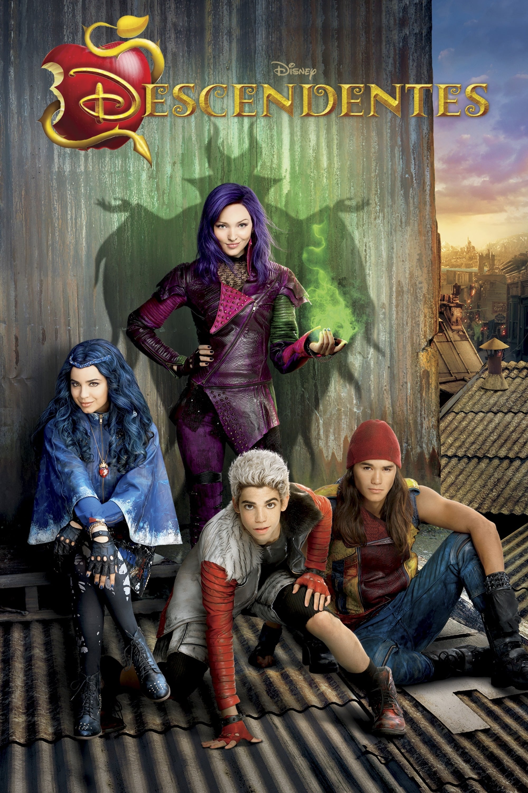

A noiva cadaver
A Noiva-Cadáver se passa em um vilarejo europeu do século XIX, onde vive Victor Van Dorst (Johnny Depp), um jovem que está prestes a se casar com Victoria Everglot (Emily Watson). Porém, acidentalmente, Victor se casa com a Noiva-Cadáver (Helena Bonham Carter), que o leva para conhecer a Terra dos Mortos. Desejando desfazer o ocorrido para poder enfim se casar com Victoria, aos poucos Victor percebe que a Terra dos Mortos é bem mais animada do que o meio vitoriano em que nasceu e cresceu.
Os incriveis
Depois do governo banir o uso de superpoderes, o maior herói do planeta, o Sr. Incrível, vive de forma pacata com sua família. Apesar de estar feliz com a vida doméstica, o Sr. Incrível ainda sente falta dos tempos em que viveu como super-herói, e sua grande chance de entrar em ação novamente surge quando um velho inimigo volta a atacar. Só que agora ele precisa contar com a ajuda de toda a família para vencer o vilão.

Barbie
No fabuloso live-action da boneca mais famosa do mundo, acompanhamos o dia a dia em Barbieland - o mundo mágico das Barbies, onde todas as versões da boneca vivem em completa harmonia e suas únicas preocupações são encontrar as melhores roupas para passear com as amigas e curtir intermináveis festas. Porém, uma das bonecas (interpretada por Margot Robbie) começa a perceber que talvez sua vida não seja tão perfeita assim, questionando-se sobre o sentido de sua existência e alarmando suas companheiras. Logo, sua vida no mundo cor-de-rosa começa a mudar e, eventualmente, ela sai de Barbieland.
Carros 3
Veterano das pistas, o campeoníssimo Relâmpago McQueen se vê em apuros após o surgimento de um novato bastante veloz, Jackson Storm, que utiliza de alta tecnologia nos treinamentos. Obrigado a chegar ao limite para batê-lo, McQueen acaba sofrendo um sério acidente durante uma corrida, que o obriga a abandonar o campeonato daquele ano. Prestes a iniciar a próxima temporada, ele se vê em dúvidas sobre se consegue ser rápido o suficiente para bater Storm e, por causa disto, busca ajuda com seu novo patrocinador.

Cruella
Ambientado na Londres dos anos 70 em meio à revolução do punk rock, o filme da Disney mostra a história de uma jovem vigarista chamada Estella (Emma Stone). Inteligente, criativa e determinada a fazer um nome para si através de seus designs, ela acaba chamando a atenção da Baronesa Von Hellman (Emma Thompson), uma lenda fashion que é devastadoramente chique e assustadora. Entretanto, o relacionamento delas desencadeia um curso de eventos e revela.

Descendantes
Os principais vilões dos contos de fadas vivem isolados em uma ilha distante. Entretanto, quando o filho da Bela e da Fera está prestes a assumir o reino de Auradon, ele resolve permitir que os filhos de quatro vilões convivam e estudem na principal escola do local. É lá que Mal (Dove Cameron), filha de Malévola (Kristen Chenoweth); Evie (Sofia Carson), filha da Rainha Má (Kathy Najimy); Jay (Booboo Stewart), filho de Jafar (Maz Jobrani); e Carlos (Cameron Boyce), filho de Cruela De Vil (Wendy Raquel Robinson), precisarão decidir se seguirão o caminho dos pais ou se tomarão outro rumo.
Divertidamente 2
Divertidamente 2 marca a sequência da famosa história de Riley (Kaitlyn Dias). Com um salto temporal, a garota agora se encontra mais velha, com 13 anos de idade, passando pela tão temida pré-adolescência. Junto com o amadurecimento, a sala de controle mental da jovem também está passando por uma demolição para dar lugar a algo totalmente inesperado: novas emoções.

Festa no céu
Um grupo de crianças bagunceiras é encaminhado a uma visita guiada ao museu, como “punição” pelo mau comportamento. Lá, eles acabam se envolvendo em uma aventura mágica que os leva a um mundo encantado, onde aprendem sobre a importância da amizade, da coragem e do respeito. Através de suas travessuras, eles descobrem que a verdadeira festa acontece quando se está com aqueles que amamos.